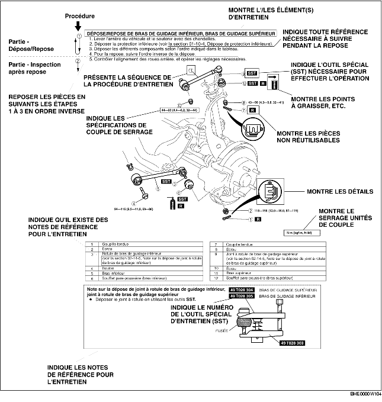

• Le présent manuel contient les procédures requises pour effectuer toutes les opérations d'entretien. Les procédures se répartissent dans les cinq opérations de base suivantes :
• Les opérations simples, pouvant s'effectuer facilement en regardant simplement le véhicule, ne sont pas reprises (p. ex. dépose/repose de pièces, mise sur cric, levage du véhicule, nettoyage des pièces, et examen visuel).
1. La plupart des opérations de réparation débutent par une illustration générale. Elle identifie les composants, montre l'assemblage des pièces, et décrit l'inspection visuelle des pièces. Cependant, les instructions écrites ne sont fournies que pour les procédures de dépose/repose devant s'effectuer méthodiquement.
2. Les pièces extensibles, les couples de serrage et les symboles pour l'huile, la graisse et le produit d'étanchéité sont illustrés dans le schéma d'ensemble. Les symboles indiquant des pièces nécessitant l'emploi d'outils spéciaux ou équivalents y figurent également.
3. Les étapes de procédures sont numérotées, et la pièce constituant le point principal de cette procédure est indiquée dans l'illustration avec le numéro correspondant. Certaines procédures peuvent inclure des points importants ou des informations complémentaires. Reportez-vous à ces informations lors de l'entretien de la pièce concernée.

• Il existe huit symboles indiquant l'huile, la graisse, les liquides, le joint d'étanchéité, et l'outil SST, ou équivalent. Ces symboles montrent les points d'application ou l'utilisation de ces matériaux au cours de l'entretien.
• Vous rencontrerez plusieurs messages de Avertissements, Attention, Remarques (notes), Spécifications et Limites tolérées supérieures et inférieures dans ce manuel.